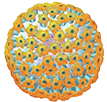

НЕОПРИНОЗИН
NEOPRINOZIN АТХ J05A Х05 VISHPHA
ЧБД — это группа часто болеющих детей, наиболее подверженных респираторным
заболеваниям (40% — дошкольного возраста; 15% — учеников младших классов).1
Острая респираторная вирусная инфекция — самый частый недуг ЧБД,
с которым успешно борется инозин пранобекс.2
Свойства молекулы
инозин пранобекс
Угнетает размножение вирусов

Восстанавливает иммунитет
Неопринозин — противовирусный
и иммуномодулирующий препарат
с молекулой инозина пранобекса.
- Безопасен для детей от 1 года
- Удобная форма выпуска — сироп
- Банановый вкус
- Семейный объем флакона — 150 мг
- Европейское качество
Состав
Действующее вещество: инозин пранобекс.
Метилпарагидроксибензоат (Е 218), пропилпарагидроксибензоат
(Е 216), сахароза, кислота лимонная безводная, натрия гидроксид, пропиленгликоль,
ароматизатор банановый, вода очищенная.
№ UA/14587/01/01 от 03.09.2015 до 03.09.2020
По рецепту
Лекарственная форма
Сироп 250 мг/5 мл во флаконе 150 мл, № 1
5 мл сиропа содержит 250 мг инозина пранобекса.
Фармакологическая группа
Противовирусные средства прямого действия.
Показания
Вирусные респираторные инфекции. Симптомы:
Начало болезни
Насморк
Кашель
Боль в горле
Температура
Инфекции, вызванные вирусами:
- Герпеса типа 1 и 2
- Ветряной оспы
- Кори
- Цитомегаловирусом
- Эпштейна-Барр
- Паротита
Папилломавирусные инфекции кожи и слизистых оболочек: *
- Остроконечные кондиломы (выросты телесного цвета на половых органах, вокруг заднего прохода, во рту)
- Папилломавирусные инфекции вульвы, влагалища и шейки матки
Острый вирусный энцефалит (воспаление головного мозга) *
Вирусные гепатиты *
Подострый склерозирующий панэнцефалит (энцефалит, который поражает нервные клетки и проводящие пути головного мозга) *
*В составе комплексной терапии.

Применение
Способ применения: через рот
Дозирование
Суточная доза: 50 мг/кг массы тела (1 мл/кг), обычно — 3 г/сутки
Максимальня доза: 4 г/сутки
Режим дозирования для детей от 1 года: через рот
| Масса тела, кг | Суточная доза |
|---|---|
| 10–14 | 3 × 5 мл |
| 15–20 | 3 × 5–7,5 мл |
| 21–30 | 3 × 7,5–10 мл |
| 31–40 | 3 × 10–15 мл |
| 41–50 | 3 × 15–17,5 мл |
Острые заболевания: 5–14 дней + 1–2 дня (после уменьшения
выраженности симптомов).
Вирусные заболевания с длительным течением: лечение продолжать 1–2
недели (после уменьшения выраженности симптомов).
Рецидивирующие заболевания: 5–14 дней + 1–2 дня (после исчезновения симптомов).
В ходе поддерживающей терапии дозу можно снизить до 500–1000 мг/сутки
Хронические заболевания:
Суточная доза: 50 мг/кг
асимптоматические заболевания — 30 дней с перерывом в 60 дней
заболевания с умеренно выраженными симптомами — 60 дней
с перерывом в 30 дней
заболевания с тяжелыми симптомами — 90 дней с перерывом в 30 дней
с перерывом в 30 дней
Инфекции, вызванные вирусом папилломы человека:
Суточная доза: 3 г/сутки
для лечения пациентов группы низкого риска (больные с нормальным
иммунитетом или с низким риском рецидива) — 14–28 дней с перерывом в
2 месяца
для лечения пациентов группы высокого риска (больные с
иммунодефицитом или с высоким риском рецидива) — 5 дней/неделю
последовательно 1–2 недели/месяц в течение 3 месяцев
Подострый склерозирующий панэнцефалит:
Суточная доза: 100 мг/кг
Максимальная доза: 3 г/сутки
Противопоказания
Повышенная чувствительность к действующему веществу или к
любому из вспомогательных веществ препаратаПодагра (отложение в тканях организма мочевой кислоты)
Гиперурикемия (повышенный уровень мочевой кислоты в крови)
Побочные эффекты
Наиболее частая побочная реакция — повышение концентрации мочевой
кислоты в крови и моче, которое восстанавливается через несколько дней
после окончания приема препарата. Все возможные побочные эффекты
указаны в детальной инструкции к препарату Неопринозин.
Передозировка может вызвать повышение концентрации
мочевой кислоты в крови и моче.
Период беременности или кормления грудью
Препарат не рекомендуется принимать в период
беременности и кормления грудью.
Управление автотранспортом или другими механизмами
Возможны нарушения со стороны нервной системы: головная боль,
головокружение, нервозность, сонливость.
Дети
Разрешен к применению детям от 1 года.
Взаимодействие
Препарат не рекомендуется принимать одновременно с:
Иммунодепрессантами
Ингибиторами ксантиноксидазы
Препаратами, усиливающими выведение мочевой кислоты с мочой
Препарат усиливает эффективность зидовудина при
одновременном применении.
Особенности применения
Препарат наиболее эффективен, если начать лечение в первые
сутки заболеванияВ состав препарата входят метилпарагидроксибензоат и
пропилпарагидроксибензоат, которые могут вызвать
аллергические реакции
При длительном применении препарата пациентам с подагрой,
гиперурикемией в анамнезе, уролитиазом и почечной
недостаточностью следует тщательно контролировать:
Концентрацию мочевой кислоты в крови и моче
Функцию печени
Состав периферической крови
Параметры функции почек
Пациентам с непереносимостью
фруктозы, нарушением всасывания
глюкозы-галактозы или недостаточностью
сахаразы-изомальтазы
принимать
препарат противопоказано
Пациентам с сахарным диабетом
принимать препарат необходимо с
осторожностью:
в 1 мл сиропа
содержится 663 мг сахарозы
Условия хранения
Хранить в недоступном
для детей месте
Хранить при температуре
не выше 25° C
Не хранить в
холодильнике
Срок годности
Закрытый флакон: 2 года.
Открытый флакон: 24 суток.
Производитель
ООО «ДКП “Фармацевтическая фабрика”» / ТМ Vishpha